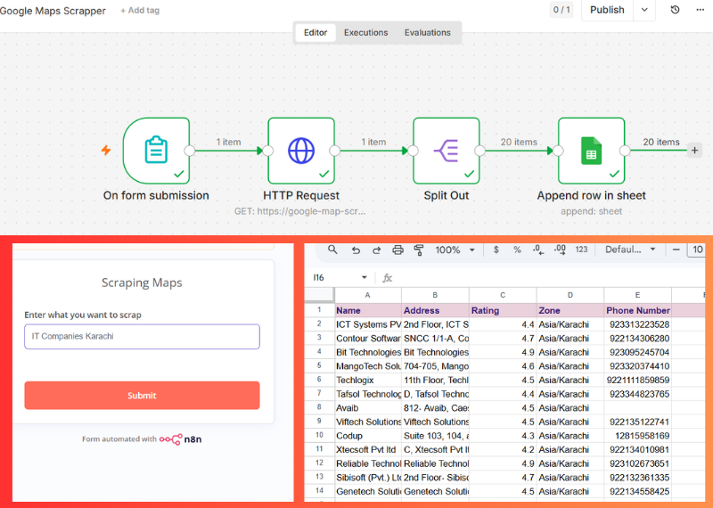

Google Maps Lead Generation Automation using n8n
Project Overview
The Google Maps Lead Generation Automation is a workflow built using n8n that automates the process of collecting business leads from Google Maps. Instead of manually searching for businesses and copying their information, the system automatically extracts, processes, and stores lead data in a structured format.
This automation helps businesses, freelancers, marketing agencies, and sales teams quickly generate targeted leads for outreach campaigns while saving significant time and effort.
Problem
Finding quality business leads manually is a time-consuming process.
Many sales and marketing professionals face challenges such as:
- Spending hours searching for businesses on Google Maps
- Manually copying business information
- Organizing lead data into spreadsheets
- Managing large volumes of leads
- Data inconsistencies and human errors
- Slow lead generation processes
These challenges reduce productivity and make scaling outreach campaigns difficult.
Solution
To solve these problems, I developed a Google Maps Lead Generation Automation workflow using n8n and RapidAPI.
The system automatically searches Google Maps for businesses based on specific keywords and locations, extracts relevant business information, processes the data into structured fields, and stores everything directly in Google Sheets.
This eliminates manual data collection and creates a scalable lead generation system that can run automatically whenever needed.
Key Features
Automated Business Data Extraction
The workflow automatically retrieves business information from Google Maps using RapidAPI integration.
Data Cleaning and Processing
Raw business data is cleaned and formatted into a structured and usable format.
Lead Information Organization
The system separates and organizes lead information into individual fields for easy filtering and analysis.
Google Sheets Integration
Processed leads are automatically saved into Google Sheets for centralized management.
Scalable Lead Collection
The workflow can collect hundreds of leads without requiring manual effort.
Automated Workflow Execution
The entire process runs automatically, reducing repetitive tasks and increasing efficiency.
Workflow Process
Step 1: Search Criteria Input
The user provides a business category, keyword, or location to target specific leads.
Step 2: Google Maps Data Retrieval
n8n sends a request to RapidAPI to fetch business information from Google Maps.
Step 3: Data Extraction
The workflow extracts valuable lead information such as:
- Business Name
- Phone Number
- Address
- Website URL
- Business Category
- Ratings
- Reviews
Step 4: Data Cleaning
The extracted information is cleaned and formatted to remove inconsistencies and unnecessary data.
Step 5: Data Splitting and Structuring
Business information is separated into individual fields for easier management and filtering.
Step 6: Google Sheets Storage
The processed leads are automatically saved to Google Sheets.
Step 7: Lead Database Creation
A centralized lead database is created and updated automatically for future outreach campaigns.
Tools Used
- n8n
- RapidAPI
- Google Maps Data API
- Google Sheets
- HTTP Request Nodes
- Data Processing Workflows
Business Benefits
Faster Lead Generation
Generate business leads in minutes instead of spending hours on manual research.
Increased Productivity
Sales and marketing teams can focus on outreach rather than data collection.
Reduced Manual Work
The automation eliminates repetitive lead-gathering tasks.
Improved Data Accuracy
Automated extraction reduces human errors and ensures consistent lead information.
Scalable Prospecting
The system can generate large numbers of leads without increasing workload.
Better Sales Pipeline
A structured lead database helps businesses manage and track prospects more effectively.
Results
- Automated Google Maps lead extraction process
- Generated structured business lead databases
- Eliminated manual lead collection efforts
- Improved efficiency of prospecting workflows
- Reduced time spent on research and data entry
- Created a scalable lead generation system
- Enhanced sales and marketing productivity
Conclusion
This Google Maps Lead Generation Automation demonstrates how workflow automation can simplify and accelerate business prospecting.
By combining n8n, RapidAPI, and Google Sheets, the system transforms a time-consuming manual process into a fully automated lead generation pipeline.
The project showcases how automation can help businesses collect high-quality leads faster, improve operational efficiency, and build scalable sales systems for growth.
Interested in a similar engagement? Get in touch — I'm available for new projects